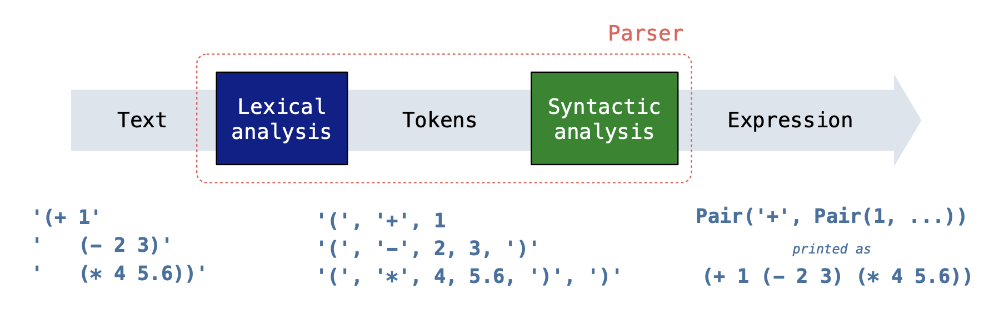
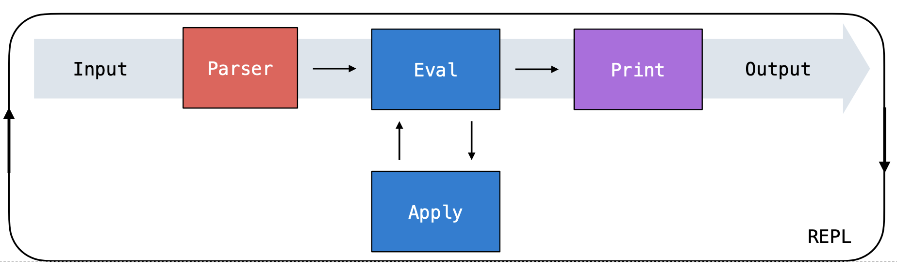

Lab 10: Interpreters
Due by 11:59pm on Tuesday, July 30.
Starter Files
Download lab10.zip. Inside the archive, you will find starter files for the questions in this lab, along with a copy of the Ok autograder.
Topics
Consult this section if you need a refresher on the material for this lab. It's okay to skip directly to the questions and refer back here should you get stuck.
Interpreters
An interpreter is a program that allows you to interact with the computer using a specific language. It takes the code you write, interprets it, and then executes the corresponding actions, often using a more fundamental language to communicate with the computer hardware.
In Project 4, you'll develop an interpreter for the Scheme programming language using Python. Interestingly, the Python interpreter you've been using throughout this course is primarily written in the C programming language. At the lowest level, computers operate by interpreting machine code, which is a series of ones and zeros that instructs the computer on performing basic tasks such as arithmetic operations and data retrieval.
When we talk about an interpreter, there are two languages at work:
- The language being interpreted: For Project 4, this is the Scheme language.
- The implementation language: This is the language used to create the interpreter itself, which, for Project 4, will be Python.
REPL
A common feature of interpreters is the Read-Eval-Print Loop (REPL), which processes user inputs in a cyclic fashion through three stages:
Read: The interpreter first reads the input string provided by the user. This input goes through a parsing process that involves two key steps:
- The lexical analysis step breaks down the input string into tokens, which are the basic elements or "words" of the language you're interpreting. These tokens represent the smallest units of meaning within the input.
The syntactic analysis step takes the tokens from the previous step and organizes them into a data structure that the underlying language can understand. For our Scheme interpreter, we assemble the tokens into a
Pairobject (similar to aLink), to represent the structure of the original call expression.- The first item in the
Pairrepresents the operator of the call expression, while the subsequent elements are the operands or arguments upon which the operation will act. Note that these operands can also be call expressions themselves (nested expressions).
- The first item in the
Below is a summary of the read process for a Scheme expression input:

Eval: This step evaluates the expressions you've written in that programming language to obtain a value. It involves the following two functions:
evaltakes an expression and evaluates it based on the language's rules. When the expression is a call expression,evaluses theapplyfunction to obtain the result. It will evaluate the operator and its operands in order. For example, in(add 1 2),evalwould identifyaddas the operator and1and2as the operands. It evaluatesaddto ensure it's a valid function and then evaluates1and2to ensure they're valid arguments.applytakes the evaluated operator (the function) and applies it to the evaluated operands (the arguments). Note that it's possible that, during this process,applyneeds to evaluate more expressions (like those found within the function body). This is whereapplymay call back toeval, and thus these two stages are mutually recursive.
- Print: Display the result of evaluating the user input.
Here's how all the pieces fit together:

Required Questions
Getting Started Videos
These videos may provide some helpful direction for tackling the coding problems on this assignment.
To see these videos, you should be logged into your berkeley.edu email.
Calculator
An interpreter is a program that executes programs. Today, we will extend the interpreter for Calculator, a simple made-up language that is a subset of Scheme. This lab is like Project 4 in miniature.
The Calculator language includes only the four basic arithmetic operations: +, -, *, and /. These operations can be nested and can take various numbers of arguments, just like in Scheme. A few examples of calculator expressions and their corresponding values are shown below.
calc> (+ 2 2 2)
6
calc> (- 5)
-5
calc> (* (+ 1 2) (+ 2 3 4))
27Calculator expressions are represented as Python objects:
- Numbers are represented using Python numbers.
- The symbols for arithmetic operations are represented using Python strings (e.g.
'+'). - Call expressions are represented using the
Pairclass below.
Pair Class
To represent Scheme lists in Python, we will use the Pair class (in both this lab and the Scheme project). A Pair instance has two attributes: first and rest. Pair is always called on two arguments. To make a list, nest calls to Pair and pass in nil as the second argument of the last pair.
- Look familiar?
Pairis very similar toLink, the class we used to represent linked lists. They differ in theirstrrepresentation: printing aPairinstance displays the list using Scheme syntax.
Note In the Python code,
nilis bound to a user-defined object that represents an empty Scheme list. Similarly,nilin Scheme evaluates to an empty list.
For example, once our interpreter reads in the Scheme expression (+ 2 3), it is represented as Pair('+', Pair(2, Pair(3, nil))).
>>> p = Pair('+', Pair(2, Pair(3, nil)))
>>> p.first
'+'
>>> p.rest
Pair(2, Pair(3, nil))
>>> p.rest.first
2
>>> print(p)
(+ 2 3)The Pair class has a map method that takes a one-argument python function fn. It returns the Scheme list that results from applying fn to each element of the Scheme list.
>>> p.rest.map(lambda x: 2 * x)
Pair(4, Pair(6, nil))Here is the Pair class and nil object (__str__ and __repr__ methods not
shown).
class Pair:
"""Represents the built-in pair data structure in Scheme."""
def __init__(self, first, rest):
self.first = first
self.rest = rest
def map(self, fn):
"""Return a Scheme list after mapping Python function FN to SELF."""
mapped = fn(self.first)
if self.rest is nil or isinstance(self.rest, Pair):
return Pair(mapped, self.rest.map(fn))
else:
raise TypeError('ill-formed list')class nil:
"""The empty list"""
def map(self, fn):
return self
nil = nil() # Assignment hides the nil class; there is only one instanceQ1: Using Pair
Answer the following questions about a Pair instance
representing the Calculator expression (+ (- 2 4) 6 8).
Use Ok to test your understanding:
python3 ok -q using_pair -uCalculator Evaluation
For Question 2 (New Procedure) and Question 4 (Saving Values), you'll need to update the calc_eval function below, which evaluates a Calculator expression. For Question 2, you'll determine what are the operator and operands for a call expression in Scheme as well as how to apply a procedure to arguments the calc_apply line. For Question 4, you'll determine how to look up the value of symbols previously defined.
def calc_eval(exp):
"""
>>> calc_eval(Pair("define", Pair("a", Pair(1, nil))))
'a'
>>> calc_eval("a")
1
>>> calc_eval(Pair("+", Pair(1, Pair(2, nil))))
3
"""
if isinstance(exp, Pair):
operator = ____________ # UPDATE THIS FOR Q2, e.g (+ 1 2), + is the operator
operands = ____________ # UPDATE THIS FOR Q2, e.g (+ 1 2), 1 and 2 are operands
if operator == 'and': # and expressions
return eval_and(operands)
elif operator == 'define': # define expressions
return eval_define(operands)
else: # Call expressions
return calc_apply(___________, ___________) # UPDATE THIS FOR Q2, what is type(operator)?
elif exp in OPERATORS: # Looking up procedures
return OPERATORS[exp]
elif isinstance(exp, int) or isinstance(exp, bool): # Numbers and booleans
return exp
elif _________________: # CHANGE THIS CONDITION FOR Q4 where are variables stored?
return _________________ # UPDATE THIS FOR Q4, how do you access a variable?
Q2: New Procedure
Add the // operation to Calculator, a floor-division procedure such that (// dividend divisor) returns the result of dividing dividend by divisor, ignoring the remainder (dividend // divisor in Python). Handle multiple inputs as illustrated in the following example: (// dividend divisor1 divisor2 divisor3) evaluates to (((dividend // divisor1) // divisor2) // divisor3) in Python. Assume every call to // has at least two arguments.
Hint: You will need to modify both the
calc_evalandfloor_divmethods for this question!
calc> (// 1 1)
1
calc> (// 5 2)
2
calc> (// 28 (+ 1 1) 1)
14Hint: Make sure that every element in a
Pair(the operator and all operands) will becalc_eval-uated once, so that we can correctly apply the relevant Python operator to operands! You may find themapmethod of thePairclass useful for this.
def floor_div(args):
"""
>>> floor_div(Pair(100, Pair(10, nil)))
10
>>> floor_div(Pair(5, Pair(3, nil)))
1
>>> floor_div(Pair(1, Pair(1, nil)))
1
>>> floor_div(Pair(5, Pair(2, nil)))
2
>>> floor_div(Pair(23, Pair(2, Pair(5, nil))))
2
>>> calc_eval(Pair("//", Pair(4, Pair(2, nil))))
2
>>> calc_eval(Pair("//", Pair(100, Pair(2, Pair(2, Pair(2, Pair(2, Pair(2, nil))))))))
3
>>> calc_eval(Pair("//", Pair(100, Pair(Pair("+", Pair(2, Pair(3, nil))), nil))))
20
"""
"*** YOUR CODE HERE ***"
Use Ok to test your code:
python3 ok -q floor_divQ3: New Form
Add and expressions to our
Calculator interpreter as well as introduce the Scheme boolean values
#t and #f, represented as Python True and False.
(The examples below assumes conditional operators (e.g. <, >, =, etc) have already been implemented,
but you do not have to worry about them for this question.)
calc> (and (= 1 1) 3)
3
calc> (and (+ 1 0) (< 1 0) (/ 1 0))
#f
calc> (and #f (+ 1 0))
#f
calc> (and 0 1 (+ 5 1)) ; 0 is a true value in Scheme!
6In a call expression, we first evaluate the operator, then evaluate the operands, and finally apply the procedure to its arguments (just like you did for floor_div in the previous question).
However, since and is a special form that short circuits on the first false argument, we cannot evaluate and expressions the same way we evaluate call expressions. We need to add special logic for forms that don't always evaluate all the sub-expressions.
Important: To check whether some
valis a false value in Scheme, useval is scheme_frather thanval == scheme_f.
scheme_t = True # Scheme's #t
scheme_f = False # Scheme's #f
def eval_and(expressions):
"""
>>> calc_eval(Pair("and", Pair(1, nil)))
1
>>> calc_eval(Pair("and", Pair(False, Pair("1", nil))))
False
>>> calc_eval(Pair("and", Pair(1, Pair(Pair("//", Pair(5, Pair(2, nil))), nil))))
2
>>> calc_eval(Pair("and", Pair(Pair('+', Pair(1, Pair(1, nil))), Pair(3, nil))))
3
>>> calc_eval(Pair("and", Pair(Pair('-', Pair(1, Pair(0, nil))), Pair(Pair('/', Pair(5, Pair(2, nil))), nil))))
2.5
>>> calc_eval(Pair("and", Pair(0, Pair(1, nil))))
1
>>> calc_eval(Pair("and", nil))
True
"""
"*** YOUR CODE HERE ***"
Use Ok to test your code:
python3 ok -q eval_andQ4: Saving Values
Implement a define special form that binds values to symbols. This should work like define in Scheme: (define <symbol> <expression>) first evaluates the expression, then binds the symbol to its value. The whole define expression evaluates to the symbol.
calc> (define a 1)
a
calc> a
1This is a more involved change. Here are the 4 steps involved:
- Add a
bindingsdictionary that will store the symbols and correspondings values (done for you). - Identify when the define form is given to
calc_eval(done for you). - Allow symbols bound to values to be looked up in
calc_eval. - Write the function
eval_definewhich should add symbols and values to the bindings dictionary.
bindings = {}
def eval_define(expressions):
"""
>>> eval_define(Pair("a", Pair(1, nil)))
'a'
>>> eval_define(Pair("b", Pair(3, nil)))
'b'
>>> eval_define(Pair("c", Pair("a", nil)))
'c'
>>> calc_eval("c")
1
>>> calc_eval(Pair("define", Pair("d", Pair("//", nil))))
'd'
>>> calc_eval(Pair("d", Pair(4, Pair(2, nil))))
2
"""
"*** YOUR CODE HERE ***"
Use Ok to test your code:
python3 ok -q eval_defineCheck Your Score Locally
You can locally check your score on each question of this assignment by running
python3 ok --scoreThis does NOT submit the assignment! When you are satisfied with your score, submit the assignment to Gradescope to receive credit for it.
Submit Assignment
Submit this assignment by uploading any files you've edited to the appropriate Gradescope assignment. Lab 00 has detailed instructions.
In addition, all students who are not in the mega lab must submit the attendance form for credit. Ask your section TA for the link! Submit this form for each section, whether you attended lab or missed it for a good reason. The attendance form is not required for mega section students.